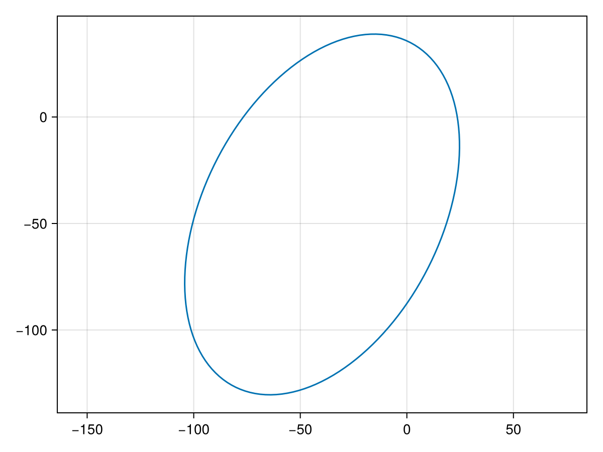
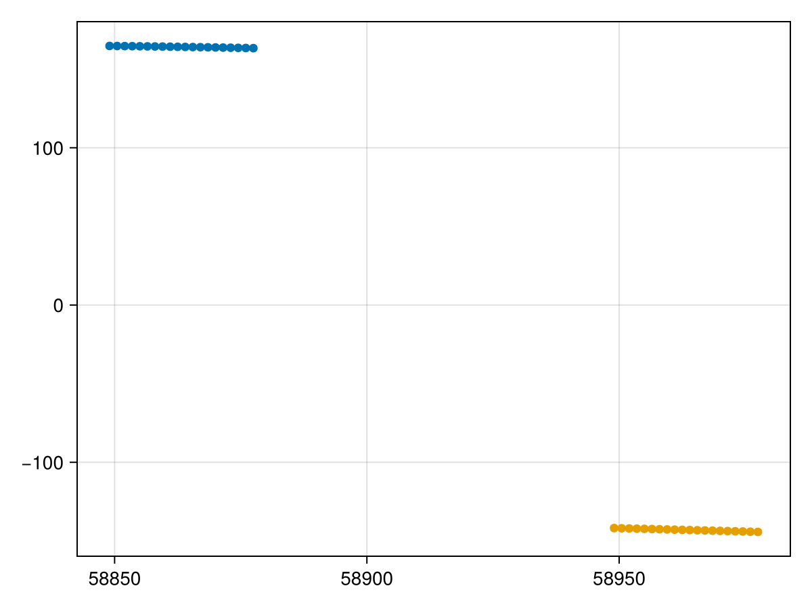
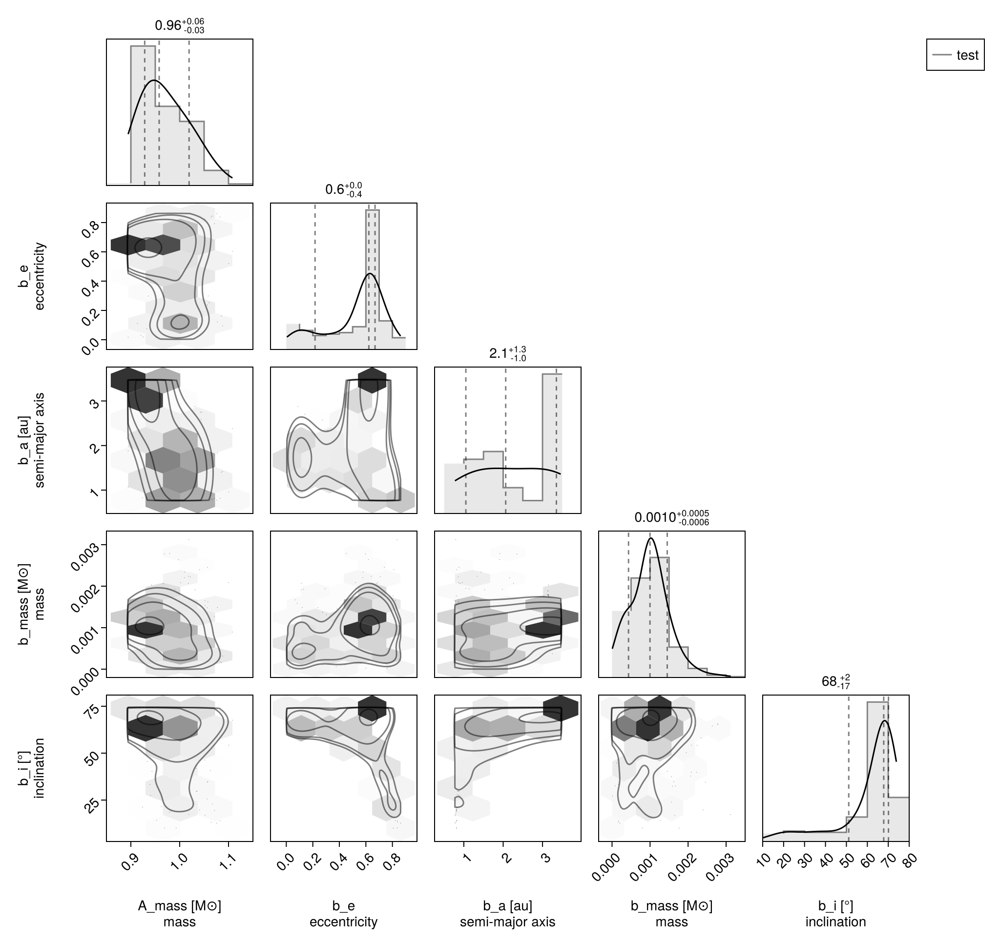
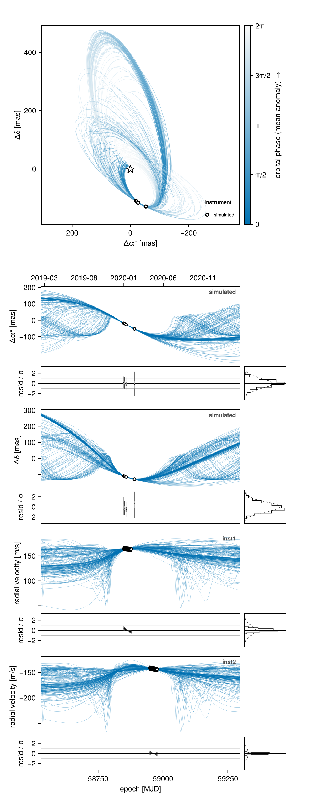
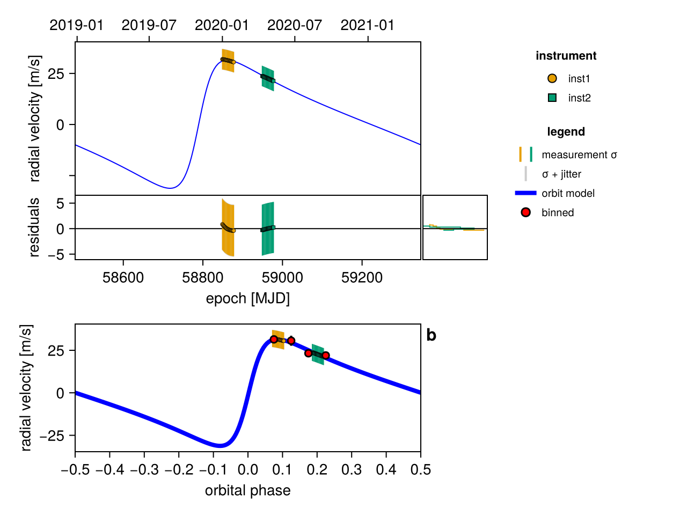

Fit Radial Velocity and Astrometry
You can use Octofitter to jointly fit relative astrometry data and radial velocity data. Below is an example. For more information on these functions, see previous guides.
Import required packages
using Octofitter
using OctofitterRadialVelocity
using CairoMakie
using PairPlots
using Distributions
using PlanetOrbitsWe now use PlanetOrbits.jl to create sample data. A "template orbit" is a whole little system: a star, a companion with a real mass, and the orbit that places one about the other. That means one object generates both the relative astrometry and the star's reflex radial velocity, self-consistently.
star_template = PlanetOrbits.Body(mass=1.0 - 0.001, name=:A) # M⊙
comp_template = PlanetOrbits.Body(mass=0.001, name=:b) # M⊙ (≈ 1 Mjup)
orb_template = PlanetOrbits.System(
(star_template, comp_template),
(PlanetOrbits.Orbit(comp_template, about=star_template;
a=1.0, e=0.7, i=pi/4, Ω=0.1, ω=1pi/4, tp=58829-40),);
plx=100.0
)
Makie.lines(orb_template, axis=(;autolimitaspect=1))
Sample position and store as relative astrometry measurements. Every observable is a difference between two named references, so we ask for the companion relative to the star explicitly:
epochs = [58849,58852,58858,58890]
traj = orbitsolve(orb_template, epochs)
astrom_dat = Table(
epoch=epochs,
ra=[raoff(traj[i], :b, :A) for i in eachindex(epochs)],
dec=[decoff(traj[i], :b, :A) for i in eachindex(epochs)],
σ_ra=fill(1.0, size(epochs)),
σ_dec=fill(1.0, size(epochs)),
cor=fill(0.0, size(epochs))
)
astrom = RelAstromObs(
astrom_dat;
target=:b, ref=:A, # the companion, measured against the star
name="simulated",
variables=@variables begin
# Fixed values for this example - could be free variables:
jitter = 0 # mas [could use: jitter ~ Uniform(0, 10)]
northangle = 0 # radians [could use: northangle ~ Normal(0, deg2rad(1))]
platescale = 1 # relative [could use: platescale ~ truncated(Normal(1, 0.01), lower=0)]
end
)And plot our simulated astrometry measurments:
fig = Makie.lines(orb_template, axis=(;autolimitaspect=1))
Makie.scatter!(astrom.table.ra, astrom.table.dec)
figGenerate a simulated RV curve from the same system. This time we ask for the star's velocity against the system barycentre — the reflex signal a spectrograph measures:
using Random
Random.seed!(1)
epochs = 58849 .+ range(0,step=1.5, length=20)
traj = orbitsolve(orb_template, epochs)
rv_star = [radvel(traj[i], :A, barycentre(orb_template)) for i in eachindex(epochs)]
rvlike = MarginalizedRVObs(
Table(
epoch=epochs,
rv=rv_star .+ 150,
σ_rv=fill(5.0, size(epochs)),
);
target=:A, ref=Barycentre,
name="inst1",
variables=@variables begin
jitter ~ LogUniform(0.1, 100) # m/s
end
)
epochs = 58949 .+ range(0,step=1.5, length=20)
traj = orbitsolve(orb_template, epochs)
rv_star = [radvel(traj[i], :A, barycentre(orb_template)) for i in eachindex(epochs)]
rvlike2 = MarginalizedRVObs(
Table(
epoch=epochs,
rv=rv_star .- 150,
σ_rv=fill(5.0, size(epochs)),
);
target=:A, ref=Barycentre,
name="inst2",
variables=@variables begin
jitter ~ LogUniform(0.1, 100) # m/s
end
)
fap = Makie.scatter(rvlike.table.epoch[:], rvlike.table.rv[:])
Makie.scatter!(rvlike2.table.epoch[:], rvlike2.table.rv[:])
fap
Now specify model and fit:
A = Body(
name="A",
variables=@variables begin
mass ~ truncated(Normal(1, 0.04), lower=0.1) # M⊙ (Baines & Armstrong 2011)
end
)
planet_b = Body(
name="b",
about=A,
variables=@variables begin
e ~ Uniform(0,0.999999)
a ~ truncated(Normal(1, 1),lower=0.1)
# Masses are solar masses; `mjup` is a plain constant.
mass ~ truncated(Normal(1mjup, 1mjup), lower=0.)
i ~ Sine()
Ω ~ UniformCircular()
ω ~ UniformCircular()
# `θ` (position angle at a reference epoch) is an orbital element in its
# own right: give `θ` and `epoch` and PlanetOrbits works out the phase.
θ ~ UniformCircular()
epoch = 58849.0
end
)
sys = System(
name="test",
bodies=[A, planet_b],
observations=[astrom, rvlike, rvlike2],
variables=@variables begin
plx = 100.0
end
)
model = Octofitter.LogDensityModel(sys)
using Random
rng = Xoshiro(0) # seed the random number generator for reproducible results
results = octofit(rng, model, max_depth=9, adaptation=300, iterations=400)Chains MCMC chain (400×35×1 Array{Float64, 3}):
Iterations = 1:1:400
Number of chains = 1
Samples per chain = 400
Wall duration = 7.75 seconds
Compute duration = 7.75 seconds
parameters = plx, A_mass, b_e, b_a, b_mass, b_i, b_Ωx, b_Ωy, b_ωx, b_ωy, b_θx, b_θy, b_Ω, b_ω, b_θ, b_epoch, simulated_jitter, simulated_northangle, simulated_platescale, inst1_jitter, inst2_jitter
internals = n_steps, is_accept, acceptance_rate, hamiltonian_energy, hamiltonian_energy_error, max_hamiltonian_energy_error, tree_depth, numerical_error, step_size, nom_step_size, is_adapt, loglike, logprior, logpost, tree_depth, numerical_error
Use `describe(chains)` for summary statistics and quantiles.
Display results as a corner plot:
octocorner(model, results, small=true)
Display the sky-plane orbit, the RV time series with residuals, and the phase-folded RV panel — all from octoplot:
octoplot(model, results)
For the radial-velocity panels on their own, without the sky panel or the relative astrometry, use rvplot:
rvplot(model, results)